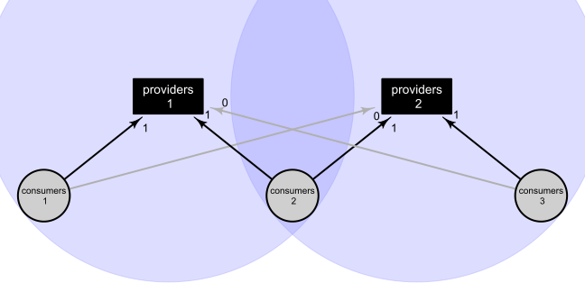
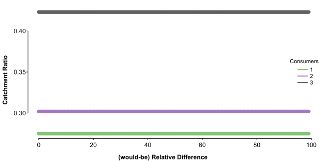

introduction.RmdBuilt with R 4.1.2 on January 26 2022
Floating catchment areas can be thought of as a means of distributing consumers across providers, or allocating providers to consumers.
Providers and consumers are locations with some quantity. At most granular, these might be individuals, such as a single doctor as provider, and single patient as consumer. In this case, each would have a quantity of 1, and if they are within range of each other, and there are no other providers or consumers in range, their floating catchment area ratio would be 1 (providers / consumers).
Usually, consumers are local groups of people, such as the population of a region (say, 1,000 people). In this case the floating catchment area ratio is 1 / 1000 – the provider distributed across consumers, resulting in the number of providers per person, or the fraction of the population with concurrent access to the provider. These ratios sum up to the number of providers when multiplied by the population: 1000 * 1 / 1000 == 1.
So far, these are simple ratios, and that holds in discrete cases. Catchment areas define the range of providers, such that we can make cases discrete; that is, given a large region with many spread-out provider and consumer locations, we can define sub-regions (catchment areas) in which to calculate ratios. A catchment is the result of the provider’s catching (attracting, serving), which, when applied spatially, defines an area.
A simple means of defining a catchment area could be by city. Say there are two doctors in a region, but they are in different cities; it might make sense to define each doctor’s catchment area as their city, and then we have two discrete ratios to work with (each doctor divided by the population of their city). It would remain discrete to add doctors in each city, as this would simply increase the numerator of the ratio – as long as they are in the same city, they are not differentiated by this catchment area definition.
This might make sense in some cases, but what if the cities are close enough that the population of one might visit doctors in the other? The floating part of floating catchment areas come in when each provider location gets their own catchment area. For example, say we define each doctor’s catchment area as a range of 5 miles, rather than the city’s boundaries. This might exclude some portion of the population (those in the same city but far away), and include others (those in another city that is close), and it might result in some overlap of catchment areas between doctors.
The most basic case where floating catchment areas differ from simple ratios is when multiple providers have differing but overlapping coverage of consumers.
Lets make a small set of providers and consumers:
# each entry in the vector represents a location, and its value is
# its quantity (e.g., number of doctors and possible patients)
(providers <- c(5, 5))
#> [1] 5 5
(consumers <- c(10, 10, 10))
#> [1] 10 10 10If these were all in the same catchment area (like a city), we could just sum them up for their ratio:
But imagine we had providers with differing consumer bases:
# we can represent consumer bases with binary vectors,
# where 1 means in range and 0 means out of range
in_range_p1 <- c(1, 1, 0) # provider 1 is in range of consumers 1 and 2
in_range_p2 <- c(0, 1, 1) # provider 2 is in range of consumers 2 and 3We can visualize this like a structural equation model or directed graph, with circles around providers representing their catchment areas: 
## this is the ratio for provider 1 --
## provider / sum of consumers in range
(ratio_p1 <- providers[1] / sum(in_range_p1 * consumers))
#> [1] 0.25
### same as
providers[1] / (consumers[1] + consumers[2])
#> [1] 0.25
## which applies to consumers 1 and 2, again represented by the weight vector
(access_p1 <- in_range_p1 * ratio_p1)
#> [1] 0.25 0.25 0.00
## same for provider 2
(ratio_p2 <- providers[2] / sum(in_range_p2 * consumers))
#> [1] 0.25
(access_p2 <- in_range_p2 * ratio_p2)
#> [1] 0.00 0.25 0.25
## and now we can combine them for individualized access scores
access_p1 + access_p2
#> [1] 0.25 0.50 0.25This introduces the concept of weights, which are the instantiation of catchment areas. In the previous example, we applied weights vector by vector manually, but an easier way to do this in bigger examples is to use a matrix:
# we can add both `in_range` vectors to a matrix
(weight <- matrix(c(in_range_p1, in_range_p2), 3))
#> [,1] [,2]
#> [1,] 1 0
#> [2,] 1 1
#> [3,] 0 1
# then do everything in one line for the same result
weight %*% (providers / crossprod(weight, consumers))
#> [,1]
#> [1,] 0.25
#> [2,] 0.50
#> [3,] 0.25This is what the catchment_ratio function does:
library(catchment)
(access_uniform <- catchment_ratio(consumers, providers, weight = weight))
#> [1] 0.25 0.50 0.25This is called a 2-step floating catchment area (2SFCA; Luo & Wang, 2003) because we are effectively combining catchment areas around both providers (step 1) and consumers (step 2).
Binary weight vectors denote which consumers fall within a catchment area, but they imply that all consumers fall within the catchment area to the same degree – all consumers get a weight of 1. But providers tend to be in physical locations that consumers must travel to, which creates variability of access within catchment areas; consumers closer to the provider location have an easier time getting to the provider, and are more likely to go to that provider than a more distant alternative. To appreciate this difference, we can adjust weights by distance.
From the previous example, imagine we separated providers more, keeping consumers 2 close to providers 1:
## as before, we can specify weights in vectors
weight_p1 <- c(.9, .9, 0)
weight_p2 <- c(0, .2, .9)
# now we can perform the same vector-wise calculations
(ratio_p1 <- providers[1] / sum(weight_p1 * consumers))
#> [1] 0.2777778
(access_p1 <- weight_p1 * ratio_p1)
#> [1] 0.25 0.25 0.00
(ratio_p2 <- providers[2] / sum(weight_p2 * consumers))
#> [1] 0.4545455
(access_p2 <- weight_p2 * ratio_p2)
#> [1] 0.00000000 0.09090909 0.40909091
access_p1 + access_p2
#> [1] 0.2500000 0.3409091 0.4090909
# or use a weight matrix
(weight <- matrix(c(weight_p1, weight_p2), 3))
#> [,1] [,2]
#> [1,] 0.9 0.0
#> [2,] 0.9 0.2
#> [3,] 0.0 0.9
weight %*% (providers / crossprod(weight, consumers))
#> [,1]
#> [1,] 0.2500000
#> [2,] 0.3409091
#> [3,] 0.4090909
# or the `catchment_ratio` function
(access <- catchment_ratio(consumers, providers, weight = weight))
#> [1] 0.2500000 0.3409091 0.4090909
## compare to the uniform weights
access - access_uniform
#> [1] 0.0000000 -0.1590909 0.1590909Compared to the uniformly weighted scores, consumer 3 gets a higher score since there is less competition from the more distant consumer 2, and consumer 2 gets a dampened score because of that distance.
Adjusting weights like this results in an enhanced 2-step floating catchment area (E2SFCA; Luo & Qi, 2009).
Note that we are still just distributing providers to consumers, so region scores sum up to the number of providers:
# original ratios are providers per person, so multiplying by consumers gives providers per location
sum(consumers * (access_p1 + access_p2))
#> [1] 10
# this is what the "region" `return_type` gives
sum(catchment_ratio(
consumers, providers,
weight = weight,
normalize_weight = TRUE, return_type = "region"
))
#> [1] 10Because weights are applied in both steps, or to both sides of the ratio, the absolute scale of weights is arbitrary. For example, you could multiply weights by 100 and get the same result:
catchment_ratio(consumers, providers, weight = weight * 100)
#> [1] 0.2500000 0.3409091 0.4090909This may be counterintuitive when relative difference are held constant. For example, if a catchment area includes only 1 provider and 1 consumer, the consumer will always get an access score of 1 (1 / 1) regardless of their weight, as long as they are in range – they could be 10 minutes from the provider or 2 hours and get the same score.
This highlights a potential issue with the interpretation of catchment ratios: They are most modestly allocations of providers to consumers. Weights work to adjust those allocations, but we always end up with the same number of providers and consumers within range. That is, given a positive set of weights, scores can only range from 0 to 1. Scores will only be 0 if the location has a weight of 0, and scores will only reach 1 if they are the only location in range – otherwise scores will infinity approach 0 and 1 as relative difference in weights increase.
We can see this in a simple simulation:
library(splot)
splot(
# here, consumers 2 retain their relative weight between providers,
# but increase their relative weight from consumers 1 and 3
t(vapply(seq(1, 100, .5), function(i) {
catchment_ratio(
consumers, providers,
weight = matrix(c(.9, .9 * i, 0, 0, .2 * i, .9), 3)
)
}, numeric(3))) ~ seq(0, 99, .5),
title = FALSE, lines = FALSE, leg.title = "Consumers", lpos = "right",
laby = "Catchment Ratio", labx = "Relative Difference"
)
# consumers 2 go from having middling access
catchment_ratio(
consumers, providers,
weight = matrix(c(.9, .9 * 1, 0, 0, .2 * 1, .9), 3)
)
#> [1] 0.2500000 0.3409091 0.4090909
# to having nearly exclusive access
catchment_ratio(
consumers, providers,
weight = matrix(c(.9, .9 * 100, 0, 0, .2 * 100, .9), 3)
)
#> [1] 0.004950495 0.973518404 0.021531100
# but they will never have entirely exclusive access so long as consumers 1 and 3 have any weight
catchment_ratio(
consumers, providers,
weight = matrix(c(.9, .9 * 1e99, 0, 0, .2 * 1e99, .9), 3)
)
#> [1] 5.00e-100 1.00e+00 2.25e-99An interesting and potentially clarifying way to think about weights is as relative probabilities that the consumer will utilize one provider over another. This makes good sense with distance weighting, where, all else being equal, a consumer is less likely to make use of a distant provider if a nearer one is available.
Thinking of weights in this way highlights a potential issue with the way we have been applying weights: The more providers a consumer has in range, the more overall weight they get, which doesn’t make sense if consumers’ consumption is actually the same (say, each consumer is a patient visiting only one doctor).
To account for this, we might normalize each consumer’s weights by proportionally redistributing them:
# get each consumer's total weight
(consumer_weight <- rowSums(weight))
#> [1] 0.9 1.1 0.9
# then calculate proportional weights
(weight_prop <- weight / consumer_weight)
#> [,1] [,2]
#> [1,] 1.0000000 0.0000000
#> [2,] 0.8181818 0.1818182
#> [3,] 0.0000000 1.0000000
# and multiply by them -- each original weight gets a portion of its consumer's total weight
(weight_normed <- weight * weight_prop)
#> [,1] [,2]
#> [1,] 0.9000000 0.00000000
#> [2,] 0.7363636 0.03636364
#> [3,] 0.0000000 0.90000000
# now just replace the original weights with the normalized ones
weight_normed %*% (providers / crossprod(weight_normed, consumers))
#> [,1]
#> [1,] 0.2750000
#> [2,] 0.2444175
#> [3,] 0.4805825
# this is what the `normalize_weight` argument does
(access_normed <- catchment_ratio(consumers, providers, weight = weight, normalize_weight = TRUE))
#> [1] 0.2750000 0.2444175 0.4805825
# compare with original
access_normed - access
#> [1] 0.02500000 -0.09649162 0.07149162With these normalized weights, consumers 1 and 3 get higher access score because consumer 2 is now (more appropriately?) spread across the 2 providers in range – consumers 1 or 3 may be the only ones using their only provider, depending on where consumers 2 go.
As always, these are still just redistributions of the same number of providers:
sum(access_normed * consumers)
#> [1] 10When weights are normalized in this way, it is called a 3-step floating catchment area (3SFCA; Wan et al., 2012).
Note that, though the original 3-step floating catchment area used enhanced 2-step floating catchment area weights, it can be applied to any weighting scheme.
It is also notable that this sort of normalization might slightly over-correct – in this case, consumers 2 gets less total weight than 1 or 3. It might make more sense to give everyone a weight of 1 by using the weight proportions directly:
# total normed weights
rowSums(weight_normed)
#> [1] 0.9000000 0.7727273 0.9000000
# total proportional weights
rowSums(weight_prop)
#> [1] 1 1 1
# scores with weight proportions
(access_prop <- catchment_ratio(consumers, providers, weight = weight_prop))
#> [1] 0.2750000 0.3019231 0.4230769
# compare with normed
access_prop - access_normed
#> [1] 0.0000000 0.0575056 -0.0575056In this case, proportional weighting resulted in slightly better access for consumers 2 because it moved them closer to providers 2 with more relative weight. This can be more directly seen between weights when they are on the same scale:
weight_prop - weight_normed / max(weight_normed)
#> [,1] [,2]
#> [1,] 0 0.0000000
#> [2,] 0 0.1414141
#> [3,] 0 0.0000000Normalizing weights in this way removes any absolute differences in weight between consumer locations, making for a more even distribution of consumers. Though, consider what this looks like in our previous simulation:
splot(
t(vapply(seq(1, 100, .5), function(i) {
catchment_ratio(
consumers, providers,
weight = matrix(c(.9, .9 * i, 0, 0, .2 * i, .9), 3) / c(.9, 1.1 * i, .9)
)
}, numeric(3))) ~ seq(1, 100, .5) - 1,
title = FALSE, lines = FALSE, leg.title = "Consumers", lpos = "right",
laby = "Catchment Ratio", labx = "(would-be) Relative Difference"
) That is, with proportional weights, consumers can shift around between providers, but they cannot be nearer or farther from the set of providers.
Proportional weighting is similar to an adjustment proposed by Paez et al. (2019), except they also propose independently adjusting the provider-side weights such that weights across providers also sum to 1. This may not be advisable for two reasons: First is that independently adjusting weights may result in a different number of providers being distributed (see the Imperfect Distribution section). Second is that column standardization on its own doesn’t seem to make a difference to the final access scores:
# balanced floating catchment area (BFCS)
(access_balanced <- catchment_ratio(
consumers, providers,
weight = weight,
adjust_consumers = function(w) w / rowSums(w),
adjust_providers = function(w) sweep(w, 2, colSums(w), "/")
))
#> [1] 0.1375000 0.2144231 0.3461538
## no longer sums to the number of providers
sum(consumers * access_balanced)
#> [1] 6.980769
# with only column-standardized weights
(access_colnorm <- catchment_ratio(
consumers, providers,
weight = sweep(weight, 2, colSums(weight), "/")
))
#> [1] 0.2500000 0.3409091 0.4090909
## same as original
access_colnorm - access
#> [1] 0 0 0The most commonly applied weights are those based on physical distance, but thinking of weights as generally describing the probability that a consumer will use a particular provider, we might imagine any number of other weight sources.
For example, relating to doctors and patients, health insurance networks may quite strictly condition consumer to provider pairings. Things like this can be added as weights arbitrarily:
# lets say our consumers and providers are all associated with one of two networks
provider_networks <- c("a", "b")
consumer_networks <- c("b", "a", "b")
# we can assign weights based on matches
(insurance_weight <- matrix(c(
consumer_networks == provider_networks[1],
consumer_networks == provider_networks[2]
), 3) * .9 + .1)
#> [,1] [,2]
#> [1,] 0.1 1.0
#> [2,] 1.0 0.1
#> [3,] 0.1 1.0
# then incorporate them with our distance-based weights
(access_insurance <- catchment_ratio(consumers, providers, weight = weight * insurance_weight))
#> [1] 0.04545455 0.46541502 0.48913043
## compare with originals
access_insurance - access
#> [1] -0.20454545 0.12450593 0.08003953With added insurance weights, the access score for consumers 1 goes down quite a lot because they have no in-network providers in range.
Another relevant point of consumer decision might be cost versus income:
# say we had some sort of price associated with each provider location
provider_price <- c(400, 250)
# and the average monthly income of each consumer location
consumer_income <- c(70, 30, 50) * 1000 / 12
# we can use this to get at a price weight --
# the higher the proportion of monthly income their price is,
# the less likely a consumer is to use that provider
(monetary_cost <- 1 - matrix(c(
provider_price[1] / consumer_income,
provider_price[2] / consumer_income
), 3))
#> [,1] [,2]
#> [1,] 0.9314286 0.9571429
#> [2,] 0.8400000 0.9000000
#> [3,] 0.9040000 0.9400000
# then incorporate that with distance weights
(access_monetary <- catchment_ratio(consumers, providers, weight = weight * monetary_cost))
#> [1] 0.2629032 0.3248161 0.4122807
## compare with originals
access_monetary - access
#> [1] 0.012903226 -0.016093018 0.003189793This is a subtler weighting, but the score for consumers 1 goes up a bit in particular because consumers 2 is pushed more toward providers 2 based on monetary cost, even though that travel cost is greater.
What information might be useful to incorporate and how much relative weight it should get are questions that will probably want to be explored on a case by case basis.
So far, we have considered consumers to have a single location (where they live) from which they will travel to providers. If consumers regularly travel to other locations, however, they might end up closer to a provider incidentally. For example, someone might visit a doctor that is close to where they work, even if the doctor is far from where they live.
One way to try and account for this might be to simply calculate multiple ratios based on different locations:
# say our consumer counts were spread across home and work locations (a consumer home x work matrix)
(consumers_work <- matrix(c(5, 0, 2, 0, 8, 3, 5, 2, 5), 3))
#> [,1] [,2] [,3]
#> [1,] 5 0 5
#> [2,] 0 8 2
#> [3,] 2 3 5
# row sums would give the same (home-origin) scores as before
rowSums(consumers_work)
#> [1] 10 10 10
catchment_ratio(rowSums(consumers_work), providers, weight = weight)
#> [1] 0.2500000 0.3409091 0.4090909
# and column sums would be the work-origin scores
colSums(consumers_work)
#> [1] 7 11 12
catchment_ratio(colSums(consumers_work), providers, weight = weight)
#> [1] 0.2777778 0.3547009 0.3461538But this does not reflect the choice some consumers now have. For example, consumers in location 1 only have access to providers 1 from home, but 50% of them also have access to providers 2 from work, and so could choose to go to either provider. Since these providers are the same distance from 1 and 3 respectively (both have a weight of .9), our best guess at these consumers’ decisions is 50% for each. We could represent this in a combine set of weights, where 50% of consumers get 100% weight for consumer location 1, and the other 50% get 50% weight for consumer location 1 and 50% for consumer location 3, resulting in a 75% weight (.9 * .75) for providers 1 and 25% weight (.9 * .25) for providers 2. We can do this for all consumers, then calculate the ratios in the same way as before:
# get the proportion of non-commuters (those with only home-origins)
(nonworker_prop <- diag(consumers_work) / consumers)
#> [1] 0.5 0.8 0.5
# then make a commuter-only matrix by replacing home-only consumers with
# all who commute from that home location
commuters <- consumers_work
diag(commuters) <- 0
diag(commuters) <- rowSums(commuters)
# calculate proportional distribution of commuters
(commuters <- commuters / rowSums(commuters))
#> [,1] [,2] [,3]
#> [1,] 0.5 0.0 0.5
#> [2,] 0.0 0.5 0.5
#> [3,] 0.2 0.3 0.5
# use this and proportional weights to calculate commuter weights
(weight_commute <- commuters %*% weight_prop * rowSums(weight))
#> [,1] [,2]
#> [1,] 0.4500000 0.4500000
#> [2,] 0.4500000 0.6500000
#> [3,] 0.4009091 0.4990909
# add these and non-commuter weights proportionally
(weight_commute <- weight_commute * (1 - nonworker_prop) + weight * nonworker_prop)
#> [,1] [,2]
#> [1,] 0.6750000 0.2250000
#> [2,] 0.8100000 0.2900000
#> [3,] 0.2004545 0.6995455
# then calculate the new access score, incorporating work-origin weights
(access_commute <- catchment_ratio(consumers, providers, weight = weight_commute))
#> [1] 0.2928700 0.3596775 0.3474525
## you can also just enter the origin matrix in place of a consumers vector
(catchment_ratio(consumers_work, providers, weight = weight))
#> [1] 0.2928700 0.3596775 0.3474525
## compare with originals
access_commute - access
#> [1] 0.04286996 0.01876840 -0.06163836Here, consumers 1 and 2 both benefit from a general shift of consumers toward provider 2, which you can also see from the weights:
# looking again at differences between scaled weights
weight_commute / max(weight_commute) - weight / max(weight)
#> [,1] [,2]
#> [1,] -0.1666667 0.2777778
#> [2,] 0.0000000 0.1358025
#> [3,] 0.2474747 -0.1363636This is a very simplified, but conceptually similar version of the commuter-based 2-step floating catchment area (CB2SFCA; Fransen et al., 2015).
We have also been assuming consumes all use the same mode of travel, such that their travel costs are all the same. We can incorporate multiple modes of travel in a similar way, this time with separate cost matrices.
Say our original cost matrix was based on travel time by car, but we knew some proportion of each consumer location did not have access to a car, and would walk to their provider. We can combined these in the same way we incorporated multiple origins:
# weight based on walking time
(weight_walking <- matrix(c(1.5, 1.2, 0, 0, 0, 1.3), 3))
#> [,1] [,2]
#> [1,] 1.5 0.0
#> [2,] 1.2 0.0
#> [3,] 0.0 1.3
# proportion of each consumer location with access to a car
consumers_car <- c(.8, .4, .7)
# proportionally combined weights
(weight_multimode <- weight * consumers_car + weight_walking * (1 - consumers_car))
#> [,1] [,2]
#> [1,] 1.02 0.00
#> [2,] 1.08 0.08
#> [3,] 0.00 1.02
# mutli-modal score
(access_multimode <- catchment_ratio(consumers, providers, weight = weight_multimode))
#> [1] 0.2428571 0.2935065 0.4636364
## compare with original
access_multimode - access
#> [1] -0.007142857 -0.047402597 0.054545455Here, consumers 3 get slightly better access because more of consumers 2 are limited to providers 1.
This is similar to the multi-modal 2-step floating catchment area proposed by Langford et al. (2016).
So far, we have been perfectly distributing consumers across providers, as indicated by the fact that region scores always sum to the number of providers. The only time this relationship doesn’t hold with the methods we’ve reviewed so far is if a provider is not in range of any consumers – you could say region scores always sum to the number of providers in range.
One way to see this sort of distribution is as an optimal distribution of providers, which is probably not very realistic (e.g., providers that are inconveniently located may not be perfectly utilized). To try and account for this Delamater (2013) proposed increasing provider-side weights, which would unbalance the ratio, allowing for some providers to be left out of the distribution. This is done by simply squaring provider-side distance weights, resulting in the modified 2-step floating catchment area (M2SFCA).
We can do this with the adjust_providers argument:
(access_modified <- catchment_ratio(
consumers, providers,
weight = weight,
adjust_providers = function(w) w^2
))
#> [1] 0.2250000 0.2431818 0.3681818
## now not all providers are distributed
sum(access_modified * consumers)
#> [1] 8.363636
## compare with original
access_modified - access
#> [1] -0.02500000 -0.09772727 -0.04090909Naturally, this will almost always result in lower access scores, particularly when providers are more distant (as in the case of consumers 2).